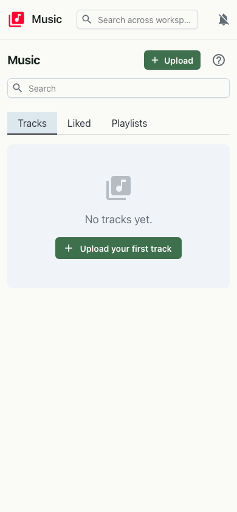

Overview
Music is your personal streaming service, hosted on your own workspace. Upload audio files and they land in a browsable library with title, artist, album and artwork. Build playlists, mark the songs you love, and stream anything on demand — the audio is served straight from your workspace's object storage with range requests, so seeking and resuming are instant.

